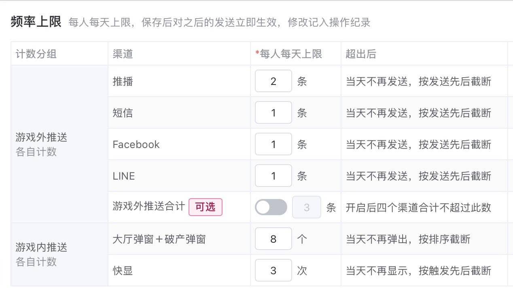
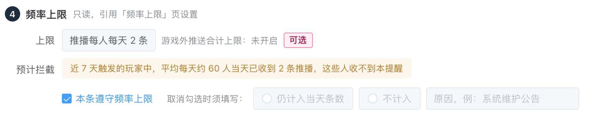
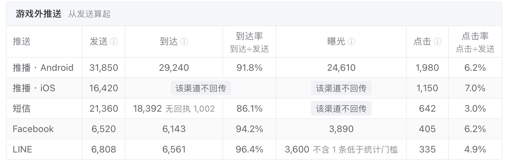

两层分开：游戏外推送（推播、短信、Facebook、LINE）不在游戏里也收得到；游戏内推送（弹窗、快显）在游戏里才看得到
标签群组：用几个会员标签组合出的玩家群，如新增、回流、潜在付费、潜在流失



| 拿不准 | 已按 | 改成另一种会怎样 |
|---|---|---|
| 按行为推送命中勿扰时段 | 默认放弃，单条可改为顺延 | 默认顺延：升级、任务类提醒不会丢，但礼包快到期类会过期 |
| 游戏外推送点击率的分母 | 点击 ÷ 发送 | 点击 ÷ 到达：数值更高，但 iOS 推播没有到达，算不出 |
| 每人每天上限的默认值 | 决定 3 中的默认值 | 放宽：被拦下的人少，每人收到的更多 |
| 切换前营销侧已排程的发送 | 在营销侧发完 | 迁到新后台重建：数据从第一天起集中，但切换时要逐条重建 |
| 需求 | 分级 | 在哪处理 |
|---|---|---|
| 一个入口进入全部推送，游戏外、游戏内分开列，每种推送一页 | 必须 | 已定 |
| 运营自己设内容、点击跳转和发送时间（立即、定时、按行为） | 必须 | 已定；附录四 |
| 限时加码礼包的推播迁入，礼包后台不再单独配置 | 必须 | 10 |
| 短信、Facebook、LINE 的发送从营销侧接入 | 必须 | 10 |
| 快显改由后台配置 | 必须 | 10 |
| 每种推送都能按标签群组选发送对象，并可排除部分玩家 | 必须 | 1、2；附录四 |
| 每种推送每人每天上限，游戏内与游戏外分开算 | 必须 | 3、4、5、7 |
| 游戏外推送设勿扰时段 | 建议 | 6 |
| 游戏外推送查发送、到达、点击；游戏内推送查曝光、点击 | 必须 | 9；附录五 |
| 按推送方式、人群、单条推送、日期查看，可导出 | 必须 | 附录四 |
| 拿不到的数据写明原因，不估算 | 必须 | 9；附录五 |
| 列出没送达的原因 | 建议 | 附录四、五 |
| 发送前看到预计人数、可触达人数、会频率上限拦下的人数 | 建议 | 附录四 |
| 先发给测试账号看效果 | 建议 | 已定；附录四 |
| 发送状态可查，可以停止，失败可以重试 | 建议 | 8、11；附录三 |
| 查一个玩家能不能收到、收到过什么、被什么拦下 | 建议 | 附录四 |
| 状态 | 能否修改 |
|---|---|
| 草稿 | 随时改 |
| 已排程 | 可改，改后须重新确认 |
| 发送中 | 不可改，但可停止 |
| 运行中 | 可改：保存为新版本，只对之后的触发生效 |
| 已完成、已停止、已结束 | 只读，可复制成新推送 |
每次修改都留版本快照，在单条推送数据页可查
| 推送 | 迁入后 | 切换方式 |
|---|---|---|
| 推播 | 推播页的按行为推送「限时加码礼包未购买提醒」 礼包剩 N 小时且尚未购买时发 | 新推送启用的同一时刻，礼包后台原设置改为只读 并提示已迁到推送统一后台 |
| 短信、Facebook、LINE | 各一页，在本后台新建并发送 | 逐种整体切换：切换后新推送只能在本后台建 切换前已排程的在营销侧发完，不在本后台重建 |
| 弹窗 | 「大厅弹窗顺序设定」整页移到侧栏的弹窗页 | 现有规则、ID、数据不变 只有一份规则，不会重复弹出 |
| 快显 | 快显页新建，服务端下发给在线玩家 | 下发生效后，客户端停用写死的快显 下发失败时，客户端沿用现有内容 |
| 推送 | 内容栏 |
|---|---|
| 推播 | 标题、内文、点击跳转；同时预览 iOS 与 Android |
| 短信 | 内文按 70 字一则计费并显示则数；链接自动转短链并记录点击 |
| 文字、图片、按钮与链接；只发给已绑定 Facebook 的玩家 | |
| LINE | 文字、图片、按钮与链接；只发给已加 LINE 好友的玩家 |
| 快显 | 横幅文字、显示位置、停留秒数、点击跳转 |
| 弹窗 | 现有规则表单：弹窗类型、位置、弹出数量、排序项 |
| 发送方式 | 发送对象 | 名单什么时候定 | 保存前看到的人数 |
|---|---|---|---|
| 立即、定时 | 全部玩家，或选标签群组；再选排除群组 | 开始发送那一刻按当时的群组名单 群组每 25 分钟刷新 | 群组人数、排除后人数 本推送可触达人数 |
| 按行为 | 触发的玩家 可加「只限这些群组」与排除群组 | 每次触发时判断这位玩家 在不在只限群组、在不在排除群组 | 近 7 天平均每天触发人数 |
| 游戏外推送 | |
|---|---|
| 推播 | 装了 App 且开启通知 |
| 短信 | 有有效手机号且未退订 |
| 已绑定 Facebook 且可发 | |
| LINE | 已加 LINE 好友且未封锁 |
| 游戏内推送 | |
|---|---|
| 弹窗 | 当时在线：进大厅、破产时按规则弹出 |
| 快显 | 当时在线 |
| 8 天以上未登录的玩家只收得到游戏外推送 | |
| 发送时间 | 规则 |
|---|---|
| 立即 | 确认后马上发；快显只发给当前在线的玩家 |
| 定时 | 须在 3 分钟后、30 天内；快显没有定时 |
| 按行为 | 玩家发生某个行为时自动发；设生效期间，以及每次触发最多提醒几次、两次至少间隔多久（建议默认值：1 次、24 小时） |
| 弹窗 | 沿用现有规则：上架期间内，玩家进大厅、破产时按排序弹出 |
按行为的首批行为 限时加码礼包快到期（剩 N 小时且尚未购买该礼包）；玩家升级；完成任务；通行证升级；快显另有中奖（金额不低于 N）
| 层 | 推送 | 计 1 次的时点 | 建议默认值（运营可改） |
|---|---|---|---|
| 游戏外推送 | 推播 | 服务商受理成功（服务商接下这条发送）计 1 条；四种推送各自计数 | 2 条 |
| 短信 | 1 条 | ||
| 1 条 | |||
| LINE | 1 条 | ||
| 游戏内推送 | 弹窗 | 弹出 1 个计 1；大厅弹窗与破产弹窗合计 | 8 个 |
| 快显 | 显示 1 次计 1 | 3 次 |
| 在哪一步 | 看到什么 |
|---|---|
| 选发送对象时 | 群组人数 → 排除后人数 → 本推送可触达人数；大群组先出估算值，15 秒内出，算完替换；按行为推送看近 7 天平均每天触发人数 |
| 确认页 | 预计频率上限拦下的人数、勿扰时段放弃或顺延的人数、预计发出条数；全部设置汇成一张摘要表 |
| 校验 | 内容完整、对象不为 0 人、触发条件完整、生效期间有效；全部通过才能确认 |
受众＝符合发送对象条件的玩家，按行为推送按触发人次算。拦下原因按图中顺序判断，每人次只计第一个命中的原因
| 层 | 指标 | 怎么算 |
|---|---|---|
| 游戏外推送 | 发送 | 被服务商受理的条数，含受理后退回的；服务商未受理的不计入 |
| 到达 | 服务商回执为送达的条数 | |
| 到达率 | 到达 ÷ 发送 | |
| 曝光 | 玩家看到的条数：推播 Android 显示通知、Facebook 已读、LINE 官方统计 | |
| 点击 | 点开推送或点了链接的条数 | |
| 点击率 | 点击 ÷ 发送 | |
| 游戏内推送 | 曝光 | 弹出或显示 1 次计 1 |
| 点击 | 点了弹窗或快显 | |
| 点击率 | 点击 ÷ 曝光 |
| 格子里写 | 什么时候用 | 例子 |
|---|---|---|
| 该渠道不回传 | 服务商本身不提供这一步 | iOS 推播的到达、曝光；短信的曝光；LINE 单条推送的到达（只有按日汇总） |
| 无回执 | 发出了，但没收到这一条的回执 | 短信运营商没回状态的条数；不算失败 |
| 低于统计门槛 | 服务商只在人数达到门槛时才给数 | LINE 曝光不足 20 人时不返回 |
| 不适用 | 这一层没有这一步 | 游戏内推送的发送、到达 |